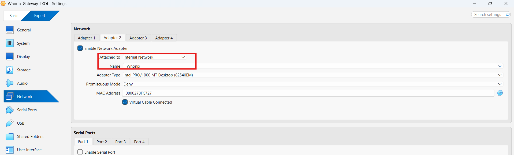
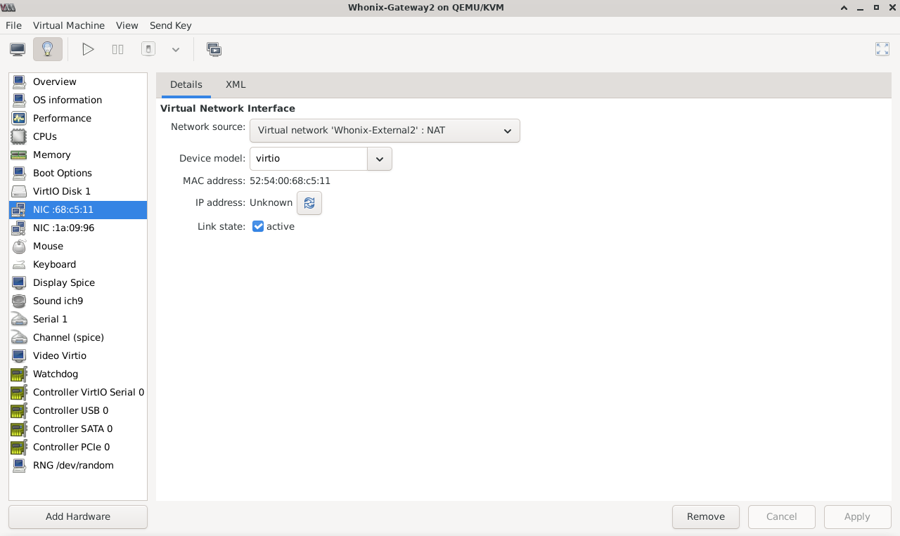
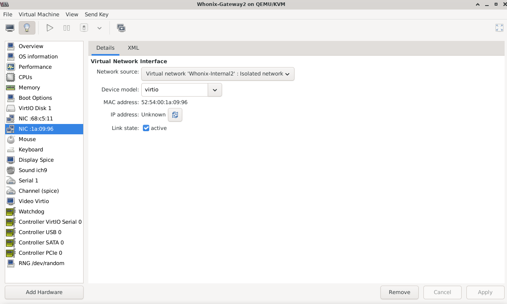
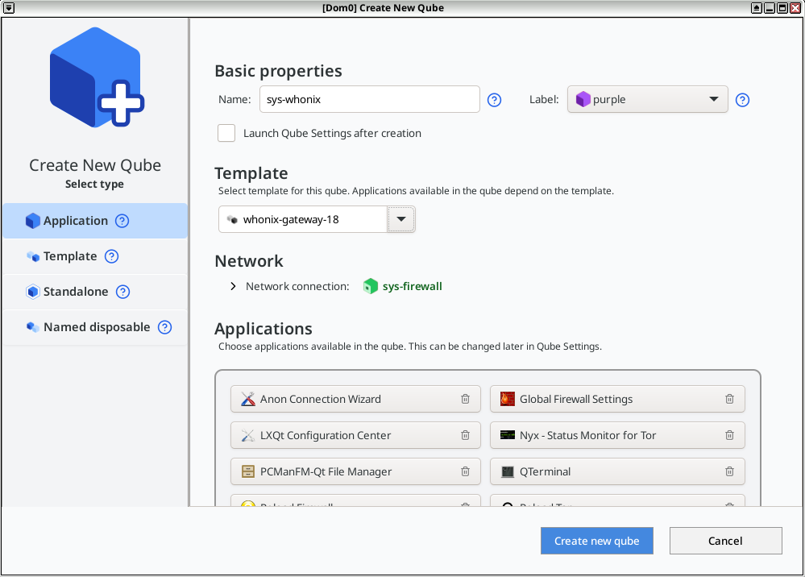
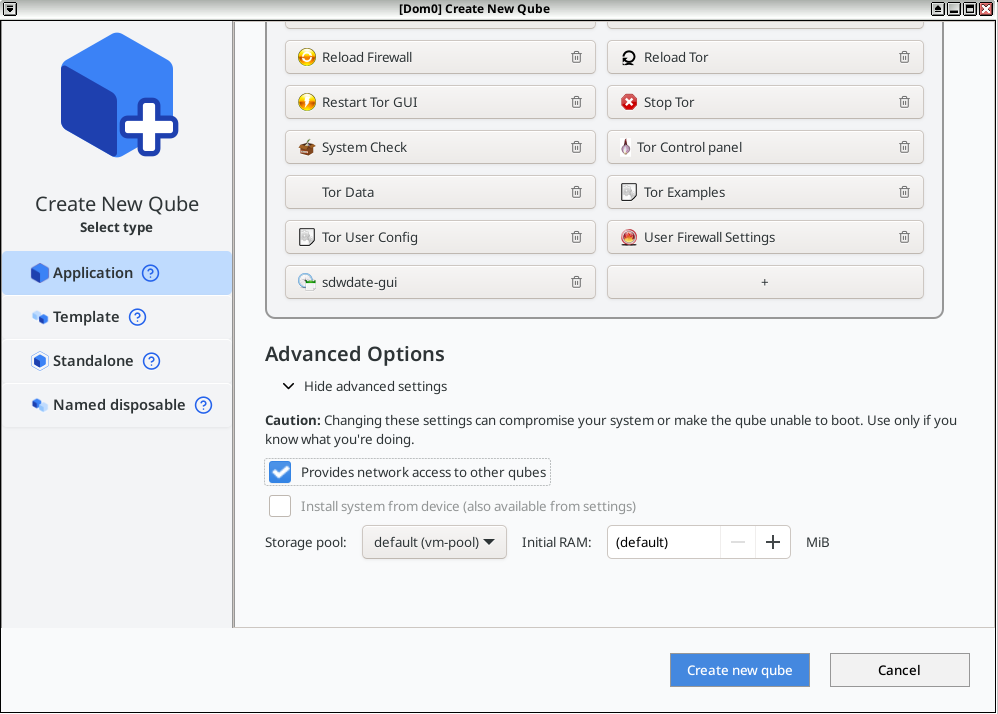

We believe security software like Whonix needs to remain Open Source and independent. Would you help sustain and grow the project? Learn more about our 14 year success story and maybe DONATE!
Whonix-Gateway
Security
HardeningDocumentationWhonix-Workstation
Security
HardeningPrevious page:
Whonix-Gateway Security HardeningIndex page:
DocumentationNext page: Whonix-Workstation
Security Hardening
Multiple Whonix-Gateway™
Compartmentalization. Managing multiple Whonix-Gateway.
Introduction
 Note: It is far safer and easier to manage multiple
Whonix-Gateway when only one is launched for user activities,
rather than running many in parallel.
Note: It is far safer and easier to manage multiple
Whonix-Gateway when only one is launched for user activities,
rather than running many in parallel.
Multiple Whonix-Gateway can be used alongside multiple Whonix-Workstation™, but this has both advantages and disadvantages. One security benefit is the isolation of separate Whonix-Gateway VM instances. In the event that one Whonix-Gateway is compromised, it is not certain the other(s) will be similarly compromised. On the downside, newly cloned Whonix-Gateway(s) will end up with a different set of Tor entry guards unless precautions are taken. [1] [2]
In this configuration ISPs are probably capable of detecting that two different Tor data folders are in use, but this is not necessarily an anonymity threat. Similarly, if multiple Tor Browsers are used with distinct Whonix-Gateway, then a different set of Tor entry guards will be used as well (unless by chance the same Tor guards are chosen for different Whonix-Gateway).
When multiple Whonix-Gateway are run in parallel, the risks explained in the Multiple Whonix-Workstation: Safety Precautions section equally apply.
How to use Multiple Whonix-Gateway
Platform specific. Select your virtualizer below.
VirtualBox
In VirtualBox Manager, it is necessary to change the name of the internal network for both Whonix-Gateway and Whonix-Workstation.
1 Learn the default internal network name:

The default internal network name is Whonix.
2 Pick an alternative internal network name:
For the second, third, or nth multiple Whonix-Gateway,
another internal network name is required. Any name can be used, but
make sure it is not reused in any other Whonix-Gateway that should be
isolated from this one. The following example will use
Whonix2, however, it
could be something completely different like
for-my-onion-web-server.
3 Change Whonix-Gateway internal network name:
VirtualBox→ Whonix-Gateway →Settings→Network→Adapter2→Name:→ changeWhonixto something else such asWhonix2→OK
4 Change Whonix-Workstation internal network name:
VirtualBox→ Whonix-Workstation →Settings→Network→Adapter1→Name:→ changeWhonixto the same internal network name as above →OK
5 Done.
KVM
In this configuration, Whonix-Workstation will not be able to communicate with one another. This is recommended to keep different Tor activity profiles completely separate. To run multiple Whonix-Gateway, it is necessary to clone existing VMs; the steps below assume an existing Whonix install.
1 Create clean clones:
Create clones of the Gateway and Workstation VMs rolled back to clean snapshots.
In Virtual Machine Manager: Highlight VM →
Open → Virtual Machine → Clone...
→ Clone
2 Set up a different external network:
The Whonix-Gateway lacks a DHCP client for security hardening reasons and so cannot be attached to the same external network without conflicting with other Whonix-Gateways' traffic.
sudo virsh net-dumpxml Whonix-External > Whonix-External2.xml
3 Edit the external network config:
Make the network unique, so it does not clash with the existing one.
sudo nano Whonix-External2.xml
- Change the name and bridge name.
- Delete the mac address and uuid parameters.
- Change the IP Address used.
Or just replace the configuration with the example below (this assumes the only custom networks are Whonix-related).
<network>
<name>Whonix-External2</name>
<forward mode='nat'>
<nat>
<port start='1024' end='65535'/>
</nat>
</forward>
<bridge name='virbr4' stp='on' delay='0'/>
<dns enable='no'/>
<ip address='10.0.3.2' netmask='255.255.255.0'>
</ip>
</network>Save and exit.
CTRL-X
y
CTRL-M4 Import and start the new external network:
virsh -c qemu:///system net-define Whonix-External2.xml
virsh -c qemu:///system net-autostart Whonix-External2
virsh -c qemu:///system net-start Whonix-External2
Attach the Gateway and Workstation VM NICs to the new network.
To edit the VM virtual NIC settings:
Highlight VM → Open →
Settings (light bulb) → NIC virtual hardware →
Set Network Source to:
Virtual network 'Whonix-External2' : NAT

- Note:
virbr1is assigned to the Whonix-External network (default Whonix-Gateway external NAT NIC). Therefore, the network name was changed toExternal2and the bridge name tovirbr4.
5 Export Whonix internal network settings:
sudo virsh net-dumpxml Whonix-Internal > Whonix-Internal2.xml
6 Edit the internal network config:
sudo nano Whonix-Internal2.xml
- Change the name and bridge name.
- Delete the mac address and uuid parameters.
Or just replace the configuration with the example below (this assumes the only custom networks are Whonix-related).
<network>
<name>Whonix-Internal2</name>
<bridge name='virbr3' stp='on' delay='0'/>
<dns enable='no'/>
</network>Save and exit.
CTRL-X
y
CTRL-M- Note:
virbr2is assigned to the Whonix-Internal network (default Whonix-Workstation internal NIC). Therefore, the network name was changed tointernal2and the bridge name tovirbr3.
7 Import and start the new internal network:
virsh -c qemu:///system net-define Whonix-Internal2.xml
virsh -c qemu:///system net-autostart Whonix-Internal2
virsh -c qemu:///system net-start Whonix-Internal2
8 Attach VM NICs to the new internal network:
To edit the VM virtual NIC settings:
Highlight VM → Open →
Settings (light bulb) → NIC virtual hardware →
Set Network Source to:
Virtual network 'Whonix-Internal2' : Isolated network

- Note: The network is exclusively internal and does not communicate with the host in any way.
9 Adjust network settings inside Whonix-Gateway2:
Now, you need to change the network settings inside the
Whonix-Gateway2 machine. While you could modify the
30_non-qubes-whonix file, it is better to avoid editing
official Whonix files, as they may be overwritten during updates.
Instead, create a new 50_custom-whonix file, which will
partially override the settings in 30_non-qubes-whonix.
- Boot the Whonix-Gateway2 VM from KVM and create a new file:
sudo nano /etc/network/interfaces.d/50_custom-whonix
- Then copy and paste:
# Custom Whonix Gateway overrides (loaded after 30_non-qubes-whonix)
auto eth0
iface eth0 inet static
pre-up ip addr flush dev eth0
address 10.0.3.15
netmask 255.255.255.0
gateway 10.0.3.2Save and exit.
CTRL-X
y
CTRL-M- Restart network interface (or whole machine):
sudo ifdown eth0 && sudo ifup eth0
Related forum discussion: https://forums.whonix.org/t/do-multiple-whonix-gateways-require-different-whonix-external-virtual-nics/19903
10 Change the number of pinned CPUs:
It is recommended to edit the cloned workstation's configuration and change the number of pinned CPUs to a different value (3 or 4) compared to the existing gateway and primary workstation. This only works if users have a quad-core system.
11 Done.
Qubes-Whonix™
It is simple to create additional Whonix-Gateway
(sys-whonix instances) in Qubes-Whonix.
Though the procedure is for advanced users who want the security benefit of separate Whonix-Gateway instances in Qubes-Whonix. While it affords some protection in the event that other Whonix-Gateway instances are compromised, it will result in a different set of Tor entry guards unless precautions are taken.
Please ensure that the newly created sys-whonix is based
on the whonix-gateway-18 Template and has a distinctive VM
name, so it is not confused with other VMs. Additionally, it is
recommended not to run multiple Whonix-Gateway instances in
parallel, see Multiple Whonix-Gateway.
To create a Whonix-Gateway ProxyVM in Qubes:
Qubes VM Manager→Qube→New qube- Name and label: Name the ProxyVM. Do not include any personal
information; if the ProxyVM is compromised, the attacker could run
qubesdb-read /nameto reveal its name. Use a generic naming convention, for example:sys-whonix-2. - Color: Choose a color label for the Whonix-Gateway ProxyVM.
- Type: Choose the type
Application. - Template: Choose Whonix-Gateway Template. For example:
whonix-gateway-18. - Networking: Choose the desired clearnet Service Qube from the
list. For example:
sys-firewall. - Advanced Options: Place a check mark in the "Provides network to other qubes" box. This will allow the Whonix-Gateway ProxyVM to provide networking for other App Qubes.
- Press:
Create new qube. - See screenshots in footnotes if needed. [3]
- Open a dom0 terminal.
- Add qvm-tag
anon-gateway,sdwdate-gui-serverto the newly created App Qube. [4]
Note: Replace sys-whonix-2
with the actual name of the VM.
qvm-tags sys-whonix-2 add anon-gateway sdwdate-gui-server
12. Done.
See Also
Footnotes
- ↑ Such as manually configuring identical Tor entry guards. Qube-Whonix users can copy the Tor state folder to another instance or use Bridges.
- ↑ At present, full instructions are not available for every Non-Qubes-Whonix platform.
- ↑ Figure: Qubes Manager:
Create New Qube - Step 1

Figure: Qubes Manager: Create New Qube - Step 2

- ↑ Developer documentation about
qvm-tags
Categories: Documentation